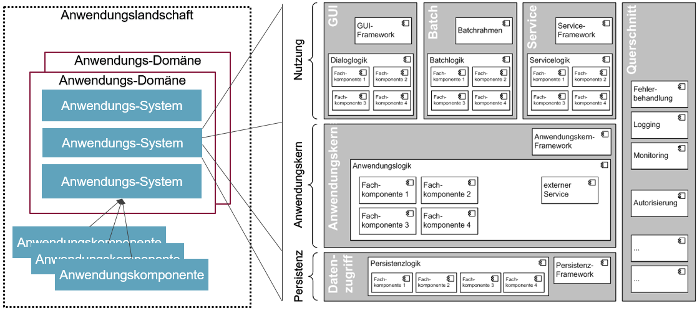
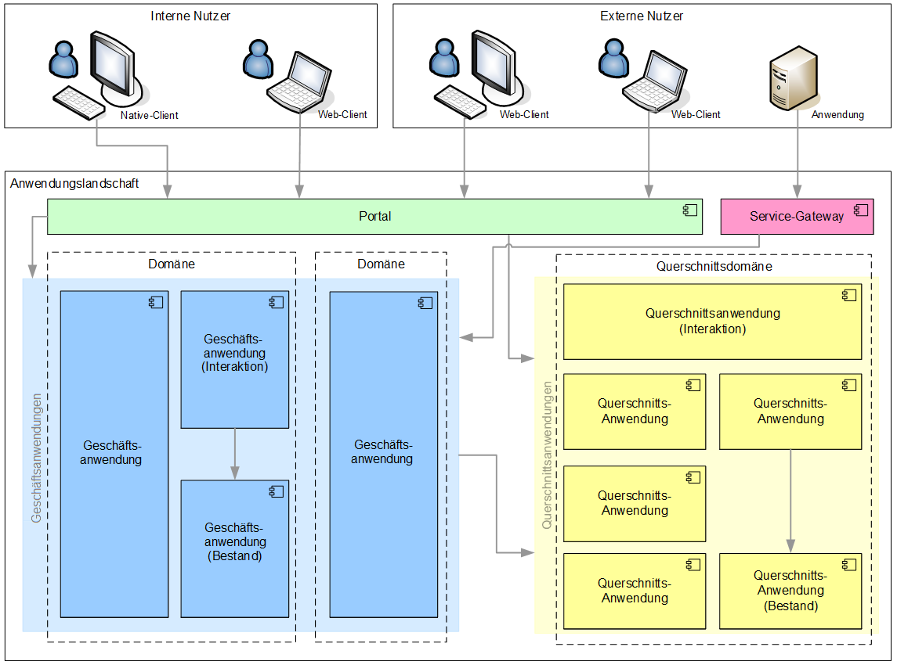
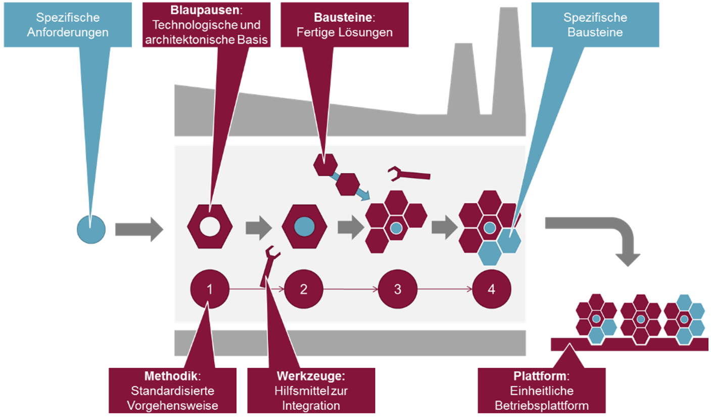

Glossar: Inhalt
1. Glossar
Dieses Dokument enthält eine Übersicht über zentrale Begriffe der IsyFact.
- A-Architektur
-
Fachliche Architektursicht auf die Software-Architektur einer Geschäftsanwendung.
- Antora-Dokumentations-Komponente
-
In einer Antora-Dokumentations-Komponente werden alle Dokumentationsseiten eines Repositories zusammengefasst, die derselben Versionierung unterliegen. Eine Antora-Dokumentations-Komponente kann mehrere Versionen haben, die in die Gesamtdokumentation integriert werden.
Eine Komponenten-Version wird repräsentiert durch die antora.yml Konfigurationsdatei. Sie enthält mindestens den Namen der Komponente und ihre Version.
- Anwender
-
Jemand, der eine Geschäftsanwendung bedient. Der Begriff steht im Kontext einer Software-Factory im Unterschied zum Nutzer.
- Anwendung
-
Die Bedeutung des Begriffs „Anwendung“ geht meist aus dem Kontext hervor. Dieser Begriff sollte nicht pauschal als Synonym für Anwendungssystem, Geschäftsanwendung oder Querschnittsanwendungen verwendet werden.
- Anwendungsdomäne
-
Spezialisierung des Begriffs [glossar-domaene] im Kontext von Geschäftsanwendungen.
- Anwendungskern (AWK)
-
Der Anwendungskern beinhaltet die Anwendungslogik eines Anwendungssystems.
Abbildung 1. Anwendungskern
- Anwendungskomponente (ANK)
-
Eine Anwendungskomponente beschreibt eine Menge von funktional zusammenhängenden Anwendungsfällen. Anwendungskomponenten sind Bestandteile von Anwendungssystemen.
Beispiele: Benutzerverwaltung: ANK_Benutzer, ANK_Rollen, …
- Anwendungskontext
-
Sammlung von nicht-funktionalen und technischen Anforderungen zur Umsetzung einer „Klasse“ von Anwendungssystemen – unabhängig von der Fachlichkeit. Ein Anwendungskontext kann zu neuen Anwendungstypen und damit zu einer neuen spezifischen Software-Factory führen.
- Anwendungslandschaft (allgemeine Definition)
-
Gröbste Strukturierungsebene für eine Menge von Anwendungssystemen: eine Anwendungslandschaft enthält Anwendungsdomänen, die wiederum Anwendungssysteme gruppieren. Zwischen den in einer Anwendungslandschaft vorhandenen Anwendungssystemen ist in der Regel eine hohe Interaktion zu erwarten.
- Anwendungslandschaft (IsyFact)
-
Die Anwendungslandschaft der IsyFact besteht aus Anwendungsdomänen, einer Querschnittsdomäne, einem Portal und einem Service-Gateway.
Abbildung 2. Anwendungslandschaft (IsyFact)
- Anwendungssystem
-
Ein Anwendungssystem ist eine zusammengehörende, logische Einheit aus Funktionen, Daten und Schnittstellen. Es besteht aus Anwendungskomponenten. Anwendungssysteme unterstützen Geschäftsprozesse. Stellt ein Anwendungssystem eine Fachlogik dar, so handelt es sich um eine Geschäftsanwendung. Ein Anwendungssystem ist Bestandteil der A-Architektur. Aus Sicht der T-Architektur bildet ein IT-System die software-technische Umsetzung eines Anwendungssystems ab.
- Anwendungstyp
-
Sammlung von Architekturvorgaben (aller Architektursichten) zur Entwicklung eines Anwendungssystems mit gleichartigen spezifischen Eigenschaften. In diesem Sinne gruppiert ein Anwendungstyp Eigenschaften von Anwendungssystemen. Für jeden Anwendungstyp ist ein Satz von Blaupausen notwendig.
- Architektursicht
-
In Anlehnung an iSAQB werden in der IsyFact die Sichten A-Architektur, T-Architektur und TI-Architektur unterschieden. Nachfolgende Abbildung zeigt die Orthogonalität von Architektursichten und Anwendungstypen. Jeder Anwendungstyp besitzt eine spezifische Darstellung in jeder Sicht.
 Abbildung 3. Anwendungstypen
Abbildung 3. AnwendungstypeniSAQB = international Software Architecture Qualification Board
- Auslieferung (Deployment)
-
Im Kontext der Auslieferung von sowohl Open-Source-Releases als auch Closed-Source-Releases wird Software (Bibliotheken sowie Anwendungssysteme) und die dazugehörige Dokumentation ausgeliefert. Die entwickelte Software wird auf einer Betriebsumgebung (Plattform) installiert. Zu jeder Auslieferung gibt es ein Change-Log.
- Batch
-
Ein Batch ist eine automatische Datenverarbeitung ohne manuelle Interaktion eines Anwenders (z.B. Einhaltung gesetzlicher Löschfristen). Der Nutzer kann die Batchlogik in vorbereitete Strukturen implementieren, die IsyFact stellt einen fertigen Batchrahmen zur Verfügung. Die Batches können dabei den Anwendungskern aufrufen und nutzen.
- Baustein
-
Wiederverwendbare Umsetzung einer spezifischen Problemlösung. Bausteine stellen strukturierte Lösungen von Geschäftsprozessen dar. Umfasst mindestens eine Bibliothek oder ein Anwendungssystem inklusive der dazugehörigen Dokumentation.
Beispiel: Logging, Sicherheit, Überwachung
Da zwischen einem logischen Baustein und einem Anwendungssystem eine N:M Beziehung besteht, kann es vorkommen, dass ein Baustein ein für sich alleine lauffähiges IT-System darstellt.
- Benutzeroberfläche (GUI)
-
Das Graphical User Interface (GUI) stellt die Verbindung zwischen Anwender und Anwendung her. Die IsyFact stellt ein fertiges Framework zur Verfügung und strukturiert die Erstellung der Dialoglogik der Geschäftsprozesse.
- Bibliothek
-
Kleinste auslieferbare Einheit von thematisch zusammengehörenden Funktionen. Eine oder mehrere Bibliotheken sind Bestandteile von IT-Systemen oder anderer Bibliotheken. Bibliotheken unterstützen nur und sind nicht (für sich) alleine ausführbar.
 Abbildung 4. Bibliothek
Abbildung 4. Bibliothek
- Blaupause
-
Blaupausen beschreiben die durch die IsyFact vorgegebene Architektur und Konzepte einer Anwendungslandschaft für den Betrieb von Geschäftsanwendungen von den drei Architektursichten aus der fachlichen Sicht, der softwaretechnischen Sicht und der Sicht der technischen Infrastruktur.
Für jeden Anwendungstyp ist ein Satz von Blaupausen notwendig.
- BVA
-
Bundesverwaltungsamt
- Change Log
-
Ein Change Log ist eine Liste, die umgesetzte Änderungen Versionen (und somit Releases) zuordnet. Die Einträge werden durch Entwickler geschrieben, wenn sie Änderungen in eine Bibliothek integrieren. Pro Bibliothek und Anwendungssystem existiert ein Change Log.
Es enthält:
-
Inhalt und Version der Software in Form einer Stückliste,
-
bekannte Fehler und Probleme der Software,
-
die mit der Version geschlossenen Fehler und umgesetzten Änderungen in einer Aufstellung.
-
- Closed Source Release
-
Bezeichnet Releases aller Bausteine der IsyFact sowie darauf basierender Endprodukte, die das Bundesverwaltungsamt anderen Behörden im Rahmen der Kieler Beschlüsse als Einer-für-Alle-System anbietet. Das Closed Source Release der IsyFact komplettiert das Open-Source-Release.
- Domäne
-
Eine Domäne im Kontext der A-Architektur entspricht der Begrifflichkeit aus Sicht des „Domain Driven Design“. Eine Anwendungsdomäne gruppiert fachlich zusammengehörende Anwendungssysteme. Werden Querschnittsanwendungen gruppiert, entsteht eine Querschnittsdomäne.
 Abbildung 5. Domänen einer Anwendungslandschaft
Abbildung 5. Domänen einer AnwendungslandschaftBeispiele für Domänen: Bewertung von Dienstposten, Finanzielle Förderung von Schulen, …
- Einer-für-Alle-System (EfA)
-
Begriff aus der deutschen Bundesverwaltung. Bezeichnet ein System, welches im Auftrag einer Behörde entwickelt wurde und anderen Behörden zur Nutzung und ggf. auch zur Weiterentwicklung angeboten wird. Im Rahmen der IsyFact werden Teile der IsyFact-Erweiterungen (IFE) als Einer-für-Alle-System angeboten.
- FTP
-
File Transfer Protocol
- Geschäftsanwendung
-
Eine Geschäftsanwendung ist ein Anwendungssystem, welches einen oder mehrere Geschäftsprozesse einer Anwendungsdomäne spezifiziert. Sie beschreibt die gesamten hierfür notwendigen Funktionen, von der Benutzerschnittstelle über die fachliche Logik, die Prozesse bis hin zur Datenhaltung. Dabei kann sie die Services von Querschnittsanwendungen oder andere Anwendungssysteme nutzen.
- Geschäftslogik
-
Die Anwendungslogik von Geschäftsanwendungen.
- Instanz
-
Ausgeführte Instanz eines IT-Systems auf einer Plattform. Eine Instanz ist Bestandteil der TI-Architektur einer Geschäftsanwendung und läuft in einer Systemlandschaft.
- IsyFact (IF)
-
Allgemeine Software-Fabrik (englisch: software factory) für den Bau von komplexen Anwendungslandschaften, die vom Bundesverwaltungsamt entwickelt wird. Sie bündelt bestehendes technisches Know-how um Anwendungssysteme effizienter entwickeln und betreiben zu können.
Die IsyFact enthält Funktionalität „allgemeiner Natur“, die nicht zu einem spezifischen Anwendungskontext gehören. Die IsyFact besteht aus den IsyFact-Standards und den IsyFact-Erweiterungen.
- IsyFact-Erweiterungen (IFE)
-
Umfasst alle Bestandteile der IsyFact, die nicht für jede Geschäftsanwendung verpflichtend sind. IsyFact-Erweiterungen können auch von Nutzern der IsyFact eingebracht werden.
- IsyFact-Standards (IFS)
-
Umfasst alle Bestandteile der IsyFact, die für jede Geschäftsanwendung verpflichtend sind. Die IsyFact-Standards werden zentral durch das Bundesverwaltungsamt weiterentwickelt.
- IT-System
-
Umsetzung einer Geschäftsanwendung unter Berücksichtigung technischer Rahmenbedingungen. Ein IT-System ist Bestandteil der T-Architektur und es ist (für sich) alleine ausführbar. Aus Sicht der A-Architektur ist die Entsprechung zum IT-System das Anwendungssystem.
- JVM
-
Java Virtual Machine
- konforme Änderung
-
Eine konforme Änderung ist eine Änderung, die das Außenverhalten einer Komponente verändert (siehe auch vollkonform und nicht-konform), wobei Abwärtskompatibilität gewährleistet ist. Das bedeutet, dass Nutzer der entsprechenden Bibliotheken keine Anpassungen vornehmen müssen, um die geänderte Komponente weiterhin nutzen zu können.
Beispiel für eine konforme Änderung ist das Ändern eines Default-Werts oder die Bereitstellung neuer Funktionalität, ohne bestehende Funktionalität anzupassen. Eine konforme Änderung muss im entsprechenden Change-Log eingetragen werden.
- Konzept
-
Ein Konzept ist die fachliche Beschreibung eines Bausteins. Es enthält Anforderungen an den Baustein, Rahmenbedingungen und Architekturentscheidungen sowie den Lösungsansatz.
- Methodik
-
Im Rahmen einer Software-Factory bildet die Methodik die Grundlage für die Umsetzung von Geschäftsanwendungen mittels einer standardisierten Vorgehensweise nach dem V-Modell XT Bund. Dabei definiert die Software Factory kein eigenes Vorgehen oder Vorgehensmodell, sondern passt die eigenen Produkte (im Sinne des V-Modell XT) in ein zum V-Modell XT konformes Vorgehen ein.
Das V-Modell-XT bietet einen Projektassistenten für das Projekt-Tailoring, der zusätzlich auch noch Vorlagen aller benötigten Dokumente mit Ausfüllhinweisen zur Verfügung stellt.
- nicht konforme Änderung
-
Eine nicht konforme Änderung ist eine Änderung, die das Außenverhalten einer Komponente verändert (siehe auch vollkonform und konform), wobei keine Abwärtskompatibilität gewährleistet ist. Das bedeutet, dass Nutzer der entsprechenden Bibliotheken in der Regel Anpassungen vornehmen müssen, um die Komponente weiter nutzen zu können.
Beispiele für nicht konforme Änderungen sind das Ändern von Schnittstellenformaten oder das Verändern von bereits etablierter Funktionen. Eine nicht konforme Änderung muss im entsprechenden Change-Log eingetragen werden.
- Nutzer
-
Jemand, der eine Software-Factory nutzt, um Geschäftsanwendungen zu bauen und zu betreiben. Der Begriff steht im Kontext einer Software-Factory im Unterschied zum Anwender.
- Nutzungsvorgaben
-
Nutzungsvorgaben beschreiben die Verwendung eines Bausteins aus technischer Sicht. Sie sind Teil der Dokumentation eines Bausteins und richten sich an Entwickler. Das Dokument komplementiert das Konzept, das sich an fachlich Interessierte und Architekten richtet.
- Open Source Release
-
Bezeichnet Releases aller Bausteine der IsyFact sowie darauf basierender Endprodukte, die das Bundesverwaltungsamt unter der Apache 2.0 Lizenz auch nicht-behördlichen Nutzern anbietet. Das Open Source Release beinhaltet die IsyFact-Standards (IFS) sowie Teile der IsyFact-Erweiterungen (IFE).
- Persistenz
-
Die Persistenzschicht ermöglicht es, Daten der Geschäftsanwendungen permanent zu speichern. Die Datenzugriffslogik der Geschäftsanwendung wird in strukturierten Komponenten realisiert. Die IsyFact stellt ein fertiges Persistenz-Framework zur Verfügung.
- PIB
-
PLIS IT-Architecture Board
- Plattform
-
Die Plattform definiert allgemeine Vorgaben und Rahmenbedingungen für den Betrieb von Anwendungslandschaften, die sich aus der Verwendung der IsyFact ergeben. Es werden Rechner-, Unterstützungsprogramm- und Netzwerkstrukturen beschrieben.
- PLIS
-
Plattform Informationssysteme
- Portal
-
Zentraler Zugangspunkt zu den Geschäftsanwendungen einer Anwendungslandschaft. Das Portal übernimmt die gemeinsame Authentifizierung und Autorisierung für alle Geschäftsanwendungen.
- Querschnittsanwendung
-
Eine Querschnittsanwendung ist eine Anwendung, welche die folgenden Kriterien in besonderem Maße erfüllt: Sie besitzt eine geringe bis nicht vorhandene Fachspezifität und ist eigenständig ohne Nutzen für Anwender. Querschnittsanwendungen sind somit in verschiedenen Anwendungsdomänen oder über mehrere Anwendungslandschaften hinweg wiederverwendbar.
Die IsyFact stellt Querschnittsanwendungen in Form von Bausteinen bereit. Bei der Entwicklung von Anwendungslandschaften können ebenfalls Querschnittsanwendungen entstehen.
Beispiele: Portalstartseite, Benutzerverzeichnis, Hilfeanwendung
- Querschnittsdomäne
-
Spezialisierung des Begriffs [glossar-domaene] im Kontext von Querschnittsanwendungen. Die Querschnittsdomäne bildet keine fachliche Klammer, sondern bündelt alle Querschnittsanwendungen einer Anwendungslandschaft unabhängig von ihrer Fachlichkeit. Aufgrund dieser Eigenschaft gibt es pro Anwendungslandschaft maximal eine Querschnittsdomäne.
- Release
-
Veröffentlichter Versionsstand einer Software-Factory.
- Service
-
Ein Service ist eine logische Einheit, die einen definierten Umfang an funktionalen Anforderungen erfüllt. Es gibt Basisservices, Fachservices und Querschnittsservices.
- Service
-
Technische Komponente (und damit Teil der T-Architektur), über die andere Anwendungen innerhalb einer Anwendungslandschaft auf die Funktionalität des Anwendungskerns eines IT-Systems zugreifen. Zugriffe von außerhalb der Anwendungslandschaft laufen zusätzlich über ein Service-Gateway.
- Service-Gateway
-
Stellt die Verbindung zwischen einem externen und einem internen Service durch eine Schnittstelle zur Verfügung.
- SLA
-
Service Level Agreement
- SLES
-
Suse Linux Enterprise Server
- Software Factory (SF)
-
Eine Software Factory ist eine Sammlung von Blaupausen, Bausteinen, einer Plattform, einer Methodik und Werkzeugen, die es erlaubt, durch Standardisierung, Modularisierung und Wiederverwendung Geschäftsanwendungen weitestgehend standardisiert zu entwickeln. Die Herausforderung bei der Wiederverwendung besteht darin, das einmal erworbene Wissen über die Anwendungsentwicklung in einer Anwendungsdomäne so zu strukturieren, zu dokumentieren und vorzuhalten, dass nachfolgende Projekte einfach und verlässlich darauf zugreifen können, und damit die Einhaltung des Architekturrahmens sichergestellt ist. „Standardisiert“ bedeutet, dass alle wesentlichen technischen Architekturentscheidungen bereits durch die Software Factory getroffen und in entsprechenden Komponenten implementiert sind. Architekten und Entwickler können sich damit auf die Umsetzung der jeweiligen Fachlichkeit der Anwendung konzentrieren.
Abbildung 6. Software Factory
- SVN
-
Subversion
- Systemlandschaft
-
Der Begriff der Anwendungslandschaft ist fachlich motiviert. Die technische Entsprechung hierfür ist der Begriff der Systemlandschaft.
Eine Systemlandschaft beinhaltet alle software-technisch in IT-Systeme umgesetzten Anwendungssysteme der Anwendungslandschaft sowie technische Systeme zur Unterstützung (z.B. Datenbanken, Web-Server, usw.).
- T-Architektur
-
Technische Architektursicht auf die Software-Architektur einer Geschäftsanwendung.
- TI-Architektur
-
Technische Infrastruktursicht auf die Software-Architektur einer Geschäftsanwendung. Sie beschreibt den Aufbau der Betriebsumgebung für die <IT-Systeme einer IsyFact-Systemlandschaft.
- vollkonforme Änderung
-
Eine vollkonforme Änderung ist eine Änderung, die das Außenverhalten einer Bibliothek nicht verändert (siehe auch konform und nicht-konform).
Beispiele für vollkonforme Änderungen sind in der Regel das Bereinigen von Quellcode, das Einführen eines Default-Werts oder die Erhöhung der Robustheit - rein fachlich ändert sich dabei nichts.
- Werkzeug
-
Eine Software-Factory setzt bei der Anwendungsentwicklung auf Automatisierung und Werkzeugunterstützung. Dazu bietet sie vorkonfigurierte Werkzeuge für Modellierung, Programmierung, Installation, Tests oder die Fehlerverfolgung.